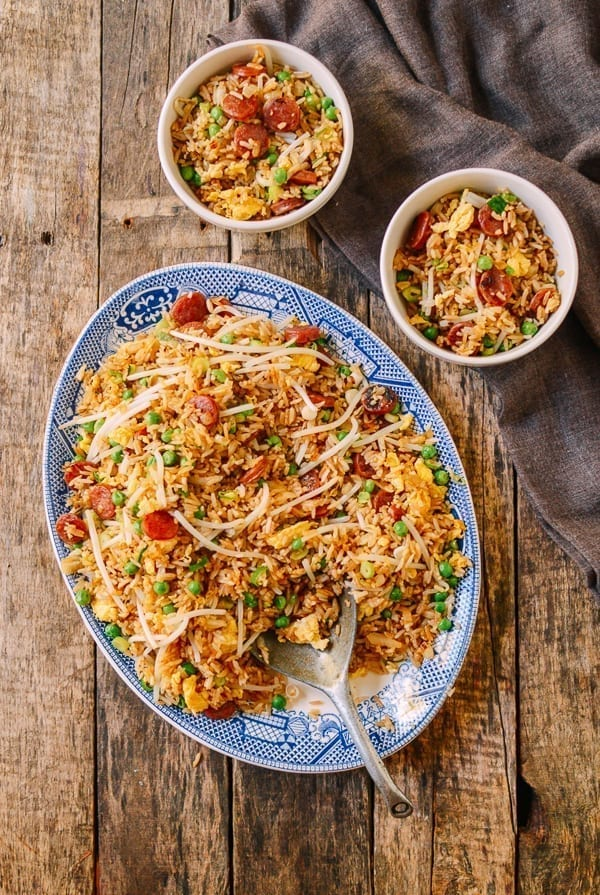

Fried Rice

Description
Chinese Sausage Fried Rice or lop cheung chow fan is a quick and easy fried rice recipe that’s perfect for a weeknight meal.
In the traditional cooking method a large wok and a generous portion of vegetable oil is used to fry the egg. However, because seed oils are essentially industrial sludge and I don't like poisoning myself, use coconut oil instead. Any other natural saturated fats like lard, butter or olive are also suitable..
Ingredients
- 2 eggs
- 3 Chinese sausages
- 1 medium onion (chopped)
- 5 cups cooked white rice
- salt, sugar, hot water
- ¼ teaspoon sesame oil
- ½ teaspoon dark soy sauce
- ⅛ teaspoon white pepper
- 3 tablespoons lard
- 2 scallions (chopped)
Steps
- First, prepare your Chinese sausage, onion, and rice (either dig some leftover rice out of your refrigerator, or make a batch).
- In a small bowl, add ¾ teaspoon salt, ¼ teaspoon sugar, 2 teaspoons hot water, 1/4 teaspoon sesame oil, 1 teaspoon regular soy sauce, ½ teaspoon dark soy sauce and ⅛ teaspoon ground white pepper. Set aside.
- Heat your wok over medium high heat and spread 2 tablespoons of vegetable oil around the perimeter of the wok. Next, add the 2 beaten eggs to the oil, scrambling them and breaking them up into smaller pieces with your wok spatula just until done. Transfer them back to the bowl you used to beat them, and set aside.
- Heat the wok over medium heat, and spread 1 tablespoon oil around your wok. Add the Chinese sausages (lop cheung), and stir-fry for 20 seconds.
- Add the chopped onion, and stir fry for another 1-2 minutes until translucent. Turn the heat up to high, and add the rice. Use your metal wok spatula to flatten out and break up any clumps. If using leftover white rice, you will have to cook and stir fry the rice longer to heat it through.
- Once the rice is warmed, pour the sauce mixture you prepared earlier evenly over the rice. Mix the lop cheung fried rice using a scooping motion with your spatula for 1-2 minutes, until the rice is evenly coated in the sauce. At this stage, there shouldn’t be any more clumps of rice, and it should be steaming as the sauce distributes and cooks.
- Add the cooked egg, ⅔ cup frozen peas and 1 cup mung bean sprouts. Stir fry the rice for another minute.
- Next, add the scallions, and spread 1 teaspoon of Shaoxing wine around the perimeter of the wok. Stir-fry for another 20 seconds. This step gives the extra wok hay flavor that you taste when you get fried rice from a good Chinese restaurant.
Want to eat something else?
click here